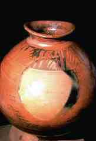
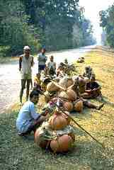
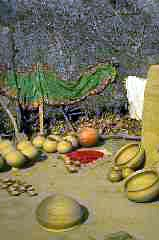
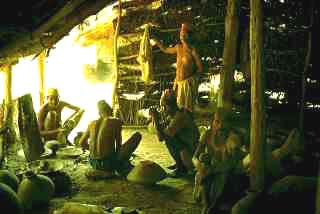
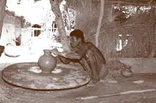
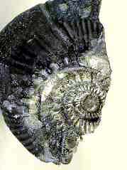
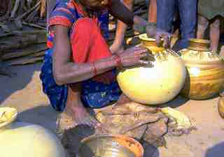
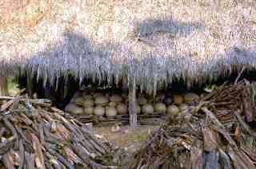
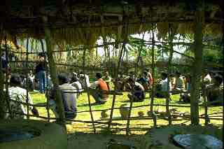
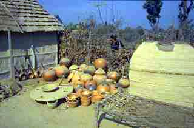

| The Last Water Jar
By Jim
Danisch.
Lightning
strikes dirt, blindingly fusing it into nature’s terra cotta,
changing its color to red, brown, orange, white, gray or black,
sometimes leaving behind strange fused bits of metal that are sought
as amulets. Potters have simulated and controlled this process since
before memory. The names for the parts of a pot -- lip, mouth, neck,
shoulder, belly, underbelly, foot -- are imbedded in the beginnings
of language. Although we have lost its everyday presence in our
electronic culture, the archetypal water jar is deeply integrated
our collective unconscious, and is remarkably similar around the
world, whether it is uncovered in an archaeological excavation in
Peru or in the street market in Kathmandu. Its nature is round or
ovoid, shell like, formed to meet hip or head, stretched as thin
as the clay permits the maker, fitted with a neck and mouth that
leads to a dark womb interior, and of a size that women can carry
comfortably. It is always unique to the neighborhood where it is
made – easily recognizable by its form and the way it resonates
sound. When it is gone from a culture, it means the extinction of
yet another simple function that brought people together in the
closely woven social net typical of the pre-industrial world.
Symbolically, the potters’ wheel as great god Vishnu’s
discus spins out the Hindu creation myth. As the universe was set
in motion, so is the soft clay first spun to the center of the wheel,
the primordial still point, where it naturally assumes the shape
of a linga -- the male principle. Next the potter opens a yoni --
the female principle -- which is shaped like a womb and will become
pregnant with the potter’s creative energy. After this marriage,
he can birth any form. When held to the ear, water jars tell the
story of human endeavor on earth: the sound is like surf, complete
with echoes of gossip at the well, satisfied chatter in the kitchen,
warfare and suffering, great music and overheard intrigues. In Southeast
Asia, every village household still keeps a water jar -- the water
stays cool without refrigeration, is freshened by some mysterious
alchemical effect of the clay, and remains one of the few ritualized
connections to the past. The element water along with its container
have a major role in most religions.
I’ve
been involved with Asian potters since 1979; as a potter myself,
I’ve learned to listen to the song of the water jar from these
unassuming people, who live in villages that resonate every morning
to the sound of hundreds of pots being beaten into form by craftspeople
who know precisely when the pot is finished by the sound it produces.
In particular, I work closely with Tharu (“Tah-roo”)
people, a large and very old ethnic group in the lowlands of southern
Nepal. Nobody knows their origins. When the government of Nepal
eradicated malaria in the 1950’s, freeing up thousands of
square miles for agricultural use (and inevitable deforestation),
most of the Tharus, who had no system of land ownership, were disenfranchised
when “their” land was distributed as political favors.
These northerners cut down the jungle, worshipped different gods,
and claimed land that the Tharus, in their innocence, never knew
could be owned. The area is called Deokhuri, and is ruled benevolently
by a feudal Lord who lives in a rambling stucco palace with at least
70 extended family members and retainers. It is the same scale as
the palace in which the Buddha was raised, just two days' walk from
here (and about four hours by car, if the roads were ever in good
condition).
Almost out
of
sight,
snow peaks shine --
horizon mounted mirages
far from the valley footpaths of gravel and clay
Bare feet treading Himalayan debris
spewed by monsoon torrent
charging to the Ganga
“We can walk to India in one day
and we know about camels in Rajasthan”
Over 600 potters live in this wide valley, in long, thatched houses
that appear to be rooted in the ground -- their roofs come down
so low -- semicircular door openings breaking the edge. Men must
stoop down to enter the cave-like dark of the interior. At the end
of the rainy season, the houses are camouflaged by rampant squash
vines, which supply both shade and nourishment, and are safely out
of hungry animals' reach. So much are they of the earth, villages
create only a small textural anomaly on the vast expanse of flood
plain, complex in its drainages and forests and fields.
Nobody
in the valley can remember when they were not potters. They continue
to provide the necessary ceramic containers for this old culture
that spreads over Southwestern Nepal and into northern India. These
people call themselves Tharu, and lived for centuries as a nondestructive
part of the lowlands ecology, their population held in balance by
climate and disease. Each Tharu house has a special alcove for the
gods. There are clay horses and there is the first clay man.
The landscape appears simple and flat when seen from a distance
-- its horizon articulated by surrounding low hills and distant
hints of snow peaks. But walking through it is indirect, diverted
by unforeseen complexities of waterways, rice plantation and bamboo
groves, which curve the road around all the places a man cannot
walk. Dirt tracks, dug with simple hand tools and maintained by
village volunteers as a form of direct taxation, are smoothed by
the feet of humans and animals, and in recent years, a couple of
motorized vehicles a day. Large herds of bullocks are sent out every
morning to graze and produce dung -- a valuable multi-purposed substance
used for fertilizer, architecture and fuel. Fresh cow dung contains
albumin -- an excellent glue and binder -- and fiber, both of which
contribute to the strength and water resistance of mud applied to
the woven reed mats that define house walls. At “cow time”
every evening, the herd returns with its cloud of dust.
Sometimes dust and sometimes mud.
Wattle and daub, clay and cow dung
shape the architecture
in fluid, hand-smoothed planes
Earth and water determine the swelling
shape of the pots
as they provide
the medium for crops
Clay lies in the stream crossings
thick and clinging
Brilliant reflections
hot sun, steamy fields
outlined by earthen dikes
Squash on thatch
Entering a Tharu long house requires bending low, but once inside,
there is a feeling of spaciousness, reaching up to the darkness
under the peak of the roof. The space is divided sculpturally into
bedrooms, kitchen and storage, by monumental clay and cow dung grain
containers that grow from the floor up to head height. In the dark
interior, they have the presence of guardians. Above these, bunches
of hanging objects punctuate the dark -- baskets, dry corn, implements
that in their unfamiliarity stimulate imagined purposes.

Inside it is dark
the rafters are hung heavy with
pottery and
baskets and
mysterious dark packages
all at different
levels
ascending into the deepest dark
which gathers under the thatched crown
What is it?
“Oh -- we keep things in it.”
What things?
“You know – our own things…”
Varying amounts of food, work, rest, water, ritual and alcohol
are the main features of everyday life. Whether Tharus live or die
depends on the grace and power of their gods, who, like Nepal itself,
are stressed by the increasing number of evil spirits and foreign
devils that are entering their world. Darkness is kept at bay just
outside the village boundary, where the guardians’ shrine
stands outside a mango grove. It is activated by the frequent cycles
of ceremony that are necessary to keep the universe in balance.
Earth, water, fire, air and space -- the makings of a water jar
and a universe.
Strong-backed
women balancing jars on their heads gather at the well with its
four corner posts, carved as deities, gossiping while they wait
their turn to run the bucket down on its rope. Gods control both
water and gossip; perhaps water jars carry the gossip home to whisper
it from their seats in the earthen floor to the cooking fire in
its clay tripod. Squatting, the women feed the fire and stir the
terra cotta cooking pots. These pots are only made by women; they
form them without a wheel, in ritual unison, at the same time of
year, and fire them in their back yards. At meal time, the rice
tastes of smoke and talk.
As sharecroppers forced to give half the crop to their Lord, men
must earn more rice by making pottery as much as possible, using
enormous wheels shaded by small huts. This is how to make a potters'
wheel: Start by crossing two timbers of sal wood, hard and heavy
and four feet long. Wrap split bamboo around this cross to make
a circle. Then mix clay, straw, rice hulls, cow dung, goat hair
and molasses to form the great disc.
If
you wait a year or two, one of the fast-talking traders who has
been with the wild men in the mountains will pass by, bringing rare
and wonderful things. They know a place in the high valleys, where
Vishnu has caused round black stones to be found in the river bed.
As the mountains come sliding and crashing down each rainy season,
the irresistible monsoon-swollen river carries, crushes and sorts
whatever it swallows -- mountain fragments, rocks, Vishnu's discus,
ancient and recent dust -- and tumbling black saligram stones. When
cracked open, they reveal Vishnu's spiral, as the positive and negative
of a fossilized snail shell, resurrected from its incalculably old
seabed, shoved up by Indian as it plows under China.
Potters’ wheels are manifestations of Vishnu, the union of
yoni and linga, the turning circle, the center and the circumference,
bound into unity by cow dung. This is a heavy load of symbolism
to turn around, and the wheel properly has one of these saligrams
as the pivot stone.
Make a stake of ironwood, broad at the base to bury in the earth,
and pointed at the top to spin the saligram. Set in place and turned
with a stick placed in a depression on the circumference, this giant
top is ready to defy gravity for long minutes. The potter has magic
in his stick, whipping the wheel off the ground -- Vishnu’s
discus that spins his lump of mud into the world of hollow singing
forms.
The seasonal pulse of agriculture coalesces energies. When fields
are dry, men dig clay and make pots to trade for rice, which is
eaten or preferably, made into beer for breakfast. If there is enough,
the beer is distilled into rakshi to blur hard reality a bit more.
When the fields are wet and pots won’t dry, men wait for the
rice to grow. Women work all the time. When a stranger comes, they
hide inside the house with their babies.
“Our life is like this:
Hard when we plow the ground
hard to persuade the seeds to grow
hard when we have no money,
on the road, trading clay
pots for rice
peddling empty water jars
for full belly
in the monsoon waters we live on an island
sailing on brown floods
rolling boulders shake our houses
the river eats our land
Rice greens the full flooded paddies
but our plates are empty
little sister
gets sick and dies
The doctor went to Kathmandu
he doesn’t like the monsoon
We have nowhere to go.
When the crops come in
full stomach, maybe
We sit in the winter sun
sit in the dusty courtyard
Play with the children
Today there’s rice to make beer
to drink in the afternoon
A man can touch the gods
just enough to persist in
being a man”
Sun
dissolves the chilly dense fog of early morning, with its cloaked
figures walking barefoot on their morning errands. Drumming begins
outside the pottery-making houses, as yesterday's half-formed pots
are expanded into their final globular resonant shapes with wooden
paddle and terra cotta anvil, some of them fully as big as the men
who drum their forms, expanding the clay until it is stretched as
thin as the shell of an ostrich egg. Water jars are never empty:
when they are not holding water, they contain sound; each standard
shape having its own resonant frequency, as if the potters scattered
throughout the village tune their jars to each other. After years
of use, the mushroom-shaped clay anvils that hold the curve against
the wooden paddle are as shiny as mirrors. In the Hindu creation
myths, sound was the first manifestation of the sentient world.
Sun dries the clay. A group of pots is beaten in several stages
during a day, as the form slowly stiffens into finality.
Drying
pots are moved in and out of the sun for several days: into the
thatched pottery hut at night to protect them from dew, and back
out each morning, until there are enough to make a firing -- usually
several hundred pieces ranging from small water or rakshi pots about
seven inches in diameter, up to the big storage pots that may reach
two feet or more. Although the function, size and proportions of
each pot are standard from village to village, decoration identifies
the pot’s origins. Some villages impress designs with the
end sections of reeds, others make simple stippled bands; the most
elaborate are finger painted by the women.
On the day of the firing, the pieces are coated with a shiny,
thin clay slip known as “gabij”, which adds beauty to
the surface and can be used for finger painting. This is the same
technology that was used all over the world before glazes were developed.
We are most familiar with it from Greek and Roman pottery. The process
of transforming clay back into stone is alchemical; firing is a
time of excitement and tension for potters in any country or historical
period. Even with modern state-of-the-art technology, there is still
mystery around what happens inside the kiln; too hot to feel, too
bright to see. The fire is managed, but not trustworthy. There is
always the potential of the fire getting out of our control and
destroying days of work. The fire master's job is a crucial one,
and he works with a combination of experience, magic, guesswork
and good hunches, tuning his intuition to the sound and subtle cues
of escaping moisture and quality of smoke.
The floor of the communal firing house is layered with these great
brittle shells of clay, systematically stacked in an oval heap that
may be twenty or thirty feet in diameter and three to four feet
high, packed in the interstices with firewood. Miraculously, men
can walk on the load, as they cover it over with a mixture of clay
and straw. The result is a shiny, wet low mound which occupies most
of the firing house, waiting for the fire to dry it into a hard,
cracked crust at the end of the firing.
As with all transformative events, a ritual offering is made to
the fire gods, and the officiating potter walks around the huge
stack, drawing a line in the clay circumference with his four fingers
-- this is to prevent the entry of malevolent spirits that can and
frequently do destroy pots. The fire is started from one side, and
by periodically opening vent holes with a pole, is guided inside
what looks like the world's biggest pie crust. A large firing may
take two days. The fire master dozes on a string bed by the firing,
waking every few hours to make more vent holes. The heap smokes;
now and again the crust breaks, revealing the red glow of embers
and seemingly transparent glowing walls of pots. These gaps are
covered by large floppy discs of clay and straw to conserve the
heat. The process is slow and deliberate, in keeping with all time
in the Tharu culture. Eventually, the fire has moved across the
heap and used up all its fuel. The pots cool for half a day.
“No need to rush
the fire
It moves
at its own rate
and decides the fate
of our pots and our bellies
both empty waiting to be filled”
At the time of unloading, everybody comes to see if the fire gods
were cooperative. It is usual to lose up to half of the products
in firing, depending on the vagaries of drying, wind, firewood,
and whatever stray or malignant spirits came wandering by. Call
the shaman to cure the problem; he knows the science of cause and
effect.
“He will talk with the spirits
and ask them
to maintain the wind in our pots
...we are poor people...
without the wind
there would be no song in our hearts”
In the open spaces in the village, stacks of identical water jars
identify potters’ houses. Identical until you go to choose
one. The curves differ by millimeters; surfaces have been colored
by the fire’s tongue; but even in the dark there is one pot
that will stand out, perhaps because of its special resonance. Pots
in the market are tapped to make sure of their resonance: a cracked
pot sounds dead. But this is not the resonance I am getting at.
It is not a quality you can measure with an instrument: call it
magic, or devotion -- the product of a moment of synchronicity in
the potter’s life when all his skills, the weather, the mood
of the day, and the five elements came together in a small epiphany.
As summer approaches, the heat builds for weeks, each day's tension
forming clouds, which fail to bring relief, except for occasional
disastrous winds that carry only enough rain to frustrate hope and
destroy firings. Finally, the sky swells with water from the South
and dumps it in great floods on the barren fields. Gratefully, the
people plant rice, which greens the valley floor, thriving on monsoon
fecundity.
"World of muck and green
struck by the sun bursting
through dark sheets of hard-hitting rain
boiling black sky"
The deluge persists during three months of skyburst when virtually
no work can be done. The roads are impassable, disease strikes,
and the people subsist on one bowl of rice gruel per day while the
water swells the next crop. At last the time of feasting comes,
followed by clay gathering and a renewal of the rhythm of pot making.
In the time that started before memory, the Rapti River has meandered
over the Deokhuri Valley in unpredictable ways -- every one hundred
thousand years there is a cataclysmic flood that takes everything
with it down to India; perhaps every ten thousand years it deposits
an exceptionally well-ground layer of fine, plastic brown clay.
Every year, there comes silt and gravel. In recent years, clay is
found about ten feet underground in the flood plain, in a layer
that ranges from 1 to 3 feet deep. In the annual cycles of renewal,
the river regularly takes a village and its farmland, forcing the
people to squat in new areas, which are becoming very scarce.
Every year, the potters must dig through the monsoon’s mud
and silt deposits to this layer, and carry it to their villages
-- a walk of 1 to 3 hours, using a pole over the shoulders with
two baskets hanging from the ends. The clay is soaked with water,
kneaded by foot, and made into a mound half as tall as a man. The
mound is covered with sand, which is wet down with water, and sits
like a large, living presence in the dark shade of the workshop.
It takes six days to prepare a ton of clay. This is the season of
Dasain or Durga Puja, which requires the biggest feast cycle of
the year, and the entire village, from grandparents to grandchildren,
is busy making pots and loading them in the communal firing house.
New water jars and small clay horses -- household deities -- are
a necessary part of the celebrations: they must be renewed each
year and installed ritually.
When there are enough pots, half the village goes on the road.
There is limited local demand, so the potters walk long distances.
To walk from Deokhuri over the hills north to Dang takes two days.
It is where hill people come to trade, and among other purchases
they carry pots up the mountain. The potters could go by bus, but
either they do not have the necessary few rupees, or they claim
that breakage is high, or they simply never do things that way.
Instead, you can see groups of them, carrying as much as possible.
Men with their carrying poles, women with stacks on their heads.
If you calculate the costs, they do not earn their own labor. But
they need the small amount of cash they can earn to buy salt and
oil, and they come back with bags of rice. It may be that the hard
work and fun of going to the bazaar together is reward enough for
people on the edge between hard survival and simple joy. It is an
opportunity for the young men and women to sneak off into the forest.
(Camped for the night on the roadside, men and women squat
around their separate fires, heaps of pots illuminated by the flames.)
Where are you going?
“South to the big country.”
What will you do?
“Our life is like this:
Walk to eateat to walk
And a little rakshi in the evening
to warm us
And in the dark, to catch a silent girl
in the wild moonlit jungle”
There
are times for drinking and dancing. During the Holi festival, brown
skins turn day glow red and rainbow violet, as powder paint is thrown
at all passers by. The center of evening celebrations is a veiled,
silk-flashed dancer -- a female impersonator, who can dance freely
where the women cannot. Everybody watches, pouring beer and rakshi
into open mouths from wonderfully functional, phallus-spouted pots
-- the spouts crowned by a spiral bird's head. Later, men and women
do the old circle dances, after everybody is drunk enough to lose
their shyness.
In February-March, all people who are able to walk a day come to
the festival of Shiva, held in the Lord of Deokhuri's mango grove.
The mood and structure are reminiscent of an American county fair,
with rows of bamboo booths roughly thatched with leafy branches,
where you can buy bangles and baubles, deep-fried sweets, tattoos,
rice and beans, have your fortune told, get your broken kerosene
lantern fixed, take your chances at ring-toss or the Wheel of Fortune.
The biggest attraction is a video show, which arrives hanging from
a procession of twenty coolies -- monitor, tape deck, speakers,
table, cash box, petrol and a generator that sputters its way through
a Hindi film. Three times.
After that, there is a stage show, with its cloth proscenium hung
from the trees and a car battery-powered sound system. After several
false starts, five seductive singers, dressed in iridescent saris,
swing their hips onto the stage. Their falsetto voices give them
away, but their energetic rendition and pranks keep the act interesting.
They are female impersonators by caste, a lineage that goes back
more generations than they can remember. Vaudeville is alive and
healthy in Deokhuri. The funky band goes on until dawn, with a rapt
audience of about one thousand people huddled close together in
their shawls, on the ground. The crowd is well behaved, probably
because the Lord and his sons carry big sticks and manage the crowd
easily -- with threats alone. Drunks are carried off and stuffed
into empty oil drums for the night. After several days of feasting,
potters return to work.
I
witnessed a major cultural transformation one year. After thousands
of years of round bottoms, the Tharus have started to slightly flatten
the base of their water pots. This occurred because cement floors
have become popular and you can no longer set your water jars directly
in a hollow in the earth. I witnessed another major change a few
years later, when the price of a water jar jumped from 25 to 40
Rupees -- 35 to 60 cents. This is a big difference to people who
make 70 Rupees a day. Firewood used to be collected freely by the
potters’ wives, who go into the nearby jungle every morning
with hatchets balanced on their heads, and return in the afternoon
with huge loads of firewood in their place. This year the government
set up guards at all the forest entrances. Their job is to collect
ten rupees tax on each load of wood. The only other option is itinerant
labor in Rajasthan, where many of the potters already go to harvest
crops seasonally. The effect may well be to permanently destroy
a way of life.
“We don't have any wood to burn
There is a government now, we are told
There is a government come to squeeze us
The forest officers squeeze us
Obese and oily, they make us squat at their doorsteps
They all know how to squeeze us
How thin can we get?”
In Deokhuri, potters' wheels are made
from the same materials as houses
Bamboo, clay and cow dung
Vishnu’s spiral saligram stone
spinning on a sharpened stake
the potter
turns a linga
then he turns a yoni
form comes of this union...
You can hear the joy of it if you listen closely
The wheel turns slower and slower
and slowly
leans down to ground
“Just move slow...
We are not of your world.
We have animal eyes
trust comes slow
In every earth home
we keep the first clay man
and alert clay horses
in the shrine
in the corner.”
(You can’t have any idea
how fast
the modern devils are slipping in.
to eat up your first man
and the clay horses
and the magic hand prints on the mud wall)
(No one tells you
Coca Cola in the village store
made of sugar and status
will take all
your cash keep you in debt
to the Lord of Deokhuri
who may be benevolent
but gets his dues)
Revolution or not
Slavery persists even in dem-o-crassy
slavery humanized
by a certain sense of dignity in inequity
the long house where the men
smoke
and talk
and drink
and beat out the curve of their world
the resonant contour of great pots
empty songs waiting for the wind
to sound them
Jim Danisch
is an American studio potter and teacher. He spent nine years in
Thimi, Nepal, developing appropriate technology for producing glazed
earthenware. He trained Nepal potters and helped establish about
24 independent workshops. Danisch now lives and works in California.
He also conducts annual
ecotours to South Asia, some of them pottery-oriented.
More Articles
|